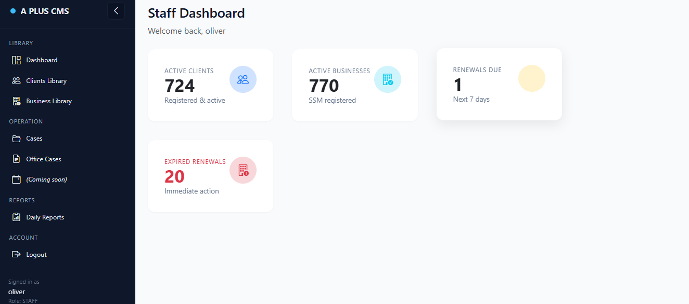
Dashboard overview displaying active cases, renewal queue,
and daily operational statistics for staff users.

A centralized module responsible for managing client records and associated business
entities, ensuring structured data organization and regulatory traceability.
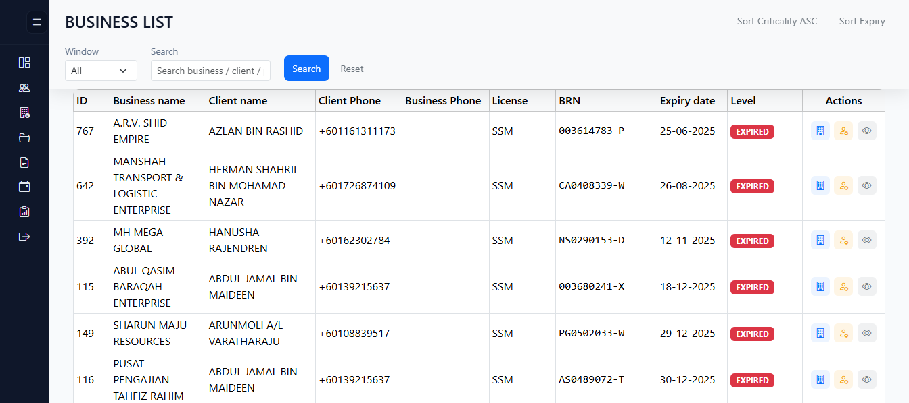
A monitoring module designed to track upcoming and expired renewals, enabling proactive
compliance management and reducing operational risk.
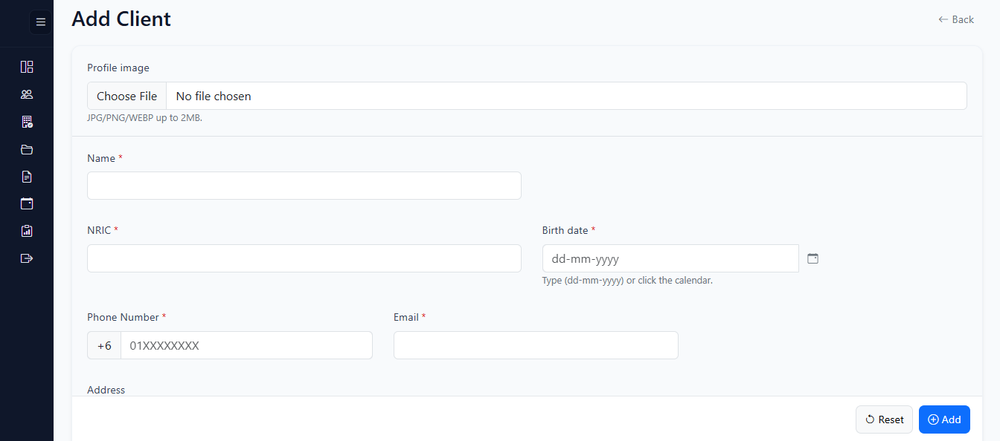
(CLIENT LIBRARY) Centralized client onboarding interface designed for structured personal data capture and secure profile management

(CLIENT LIBRARY) Extended client configuration module supporting demographic tracking, account status control, and secure Ezbiz credential management

(BUSINESS LIBRARY)Integrated document and partner management section enabling categorized uploads, validity tracking, and compliance record maintenance.
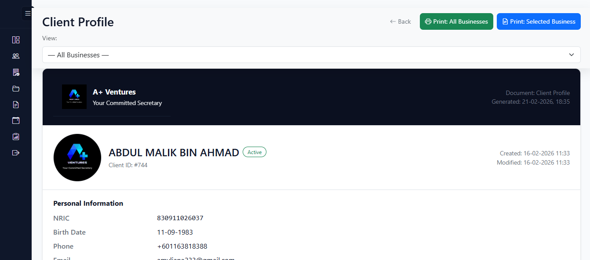
(BUSINESS LIBRARY) Comprehensive client dashboard displaying profile details, business associations, document validity, and printable reporting options for operational reference.

Structured document management table enabling file tracking, validity monitoring, and real-time status visibility for each registered business.
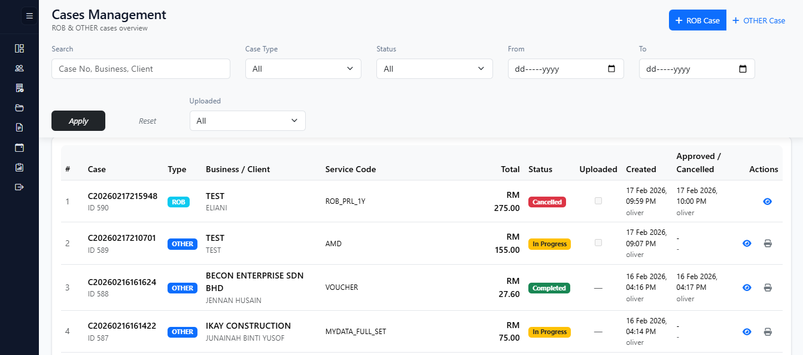
A core processing module responsible for handling service requests, managing case
workflows, tracking documentation, and maintaining transaction records.
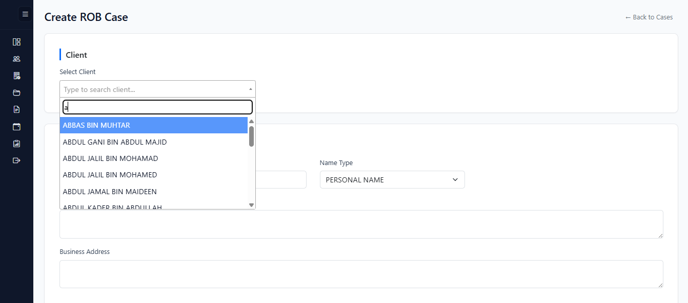
(ROB CASE) ROB case initiation module featuring searchable client selection and structured business information input.
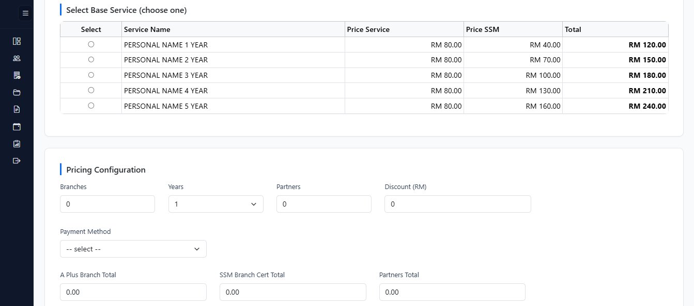
(ROB CASE) Structured service selection table presenting multi-year options with transparent SSM and service pricing comparison.
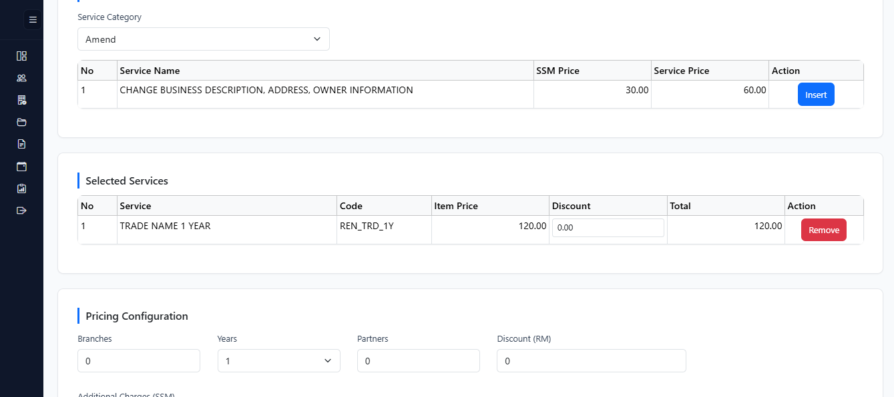
(OTHER CASE) Dynamic service catalog enabling staff to insert predefined services with automated pricing and structured item tracking.
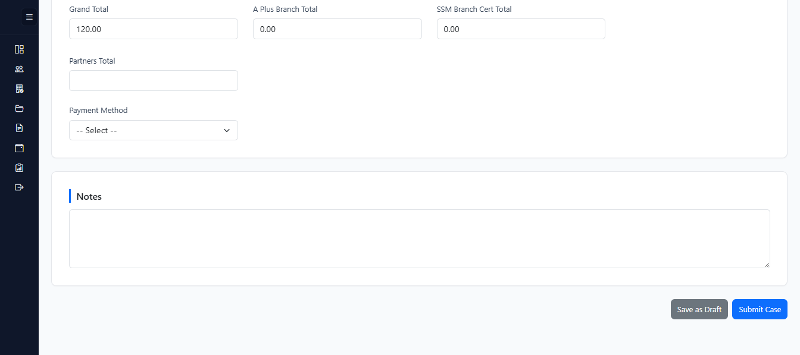
(OTHER CASE) Editable case workflow allowing pricing configuration, payment method selection, notes entry, and draft saving prior to final submission.
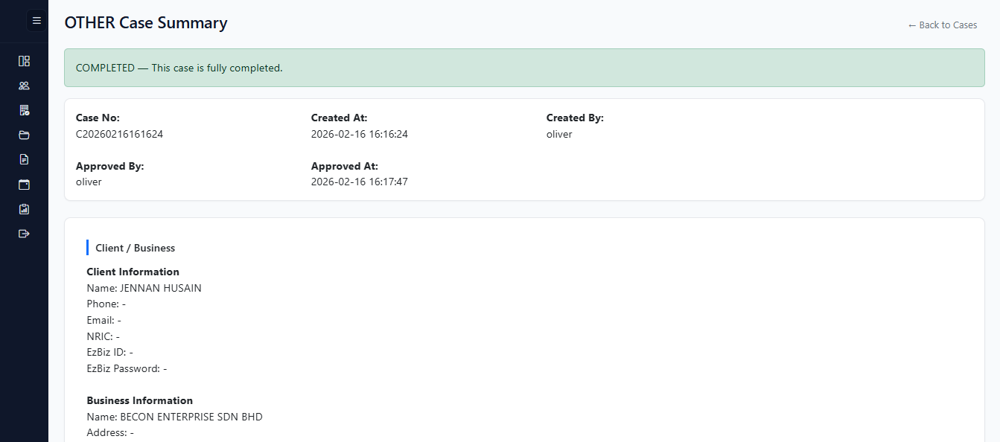
(ROB & OTHER CASE) Finalized case summary displaying approval status, case metadata, pricing breakdown, and administrative control actions.
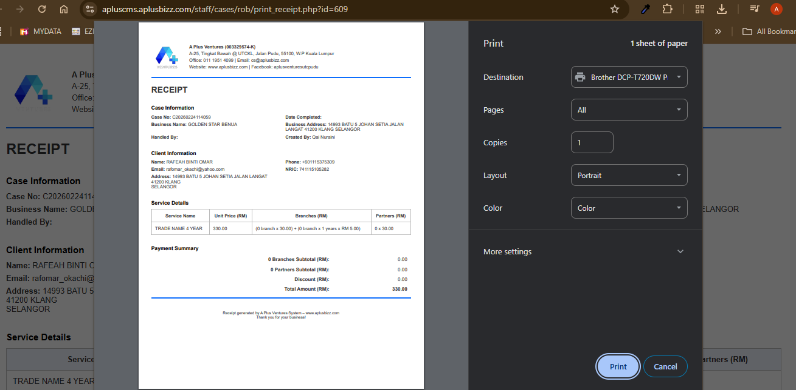
(ROB & OTHER CASE) Automated financial documentation module generating structured receipts with detailed service breakdown and print-ready formatting for compliance and recordkeeping.
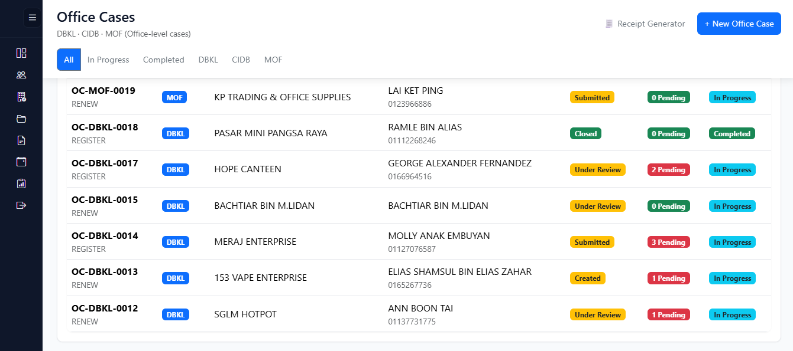
An internal workflow module designed to manage task assignments, stage progression,
document handling, and structured case lifecycle governance.
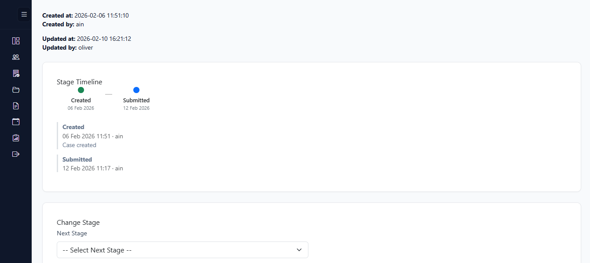
(OCMS) Structured workflow timeline displaying case status progression, timestamps, and user activity logs for full operational transparency and accountability.
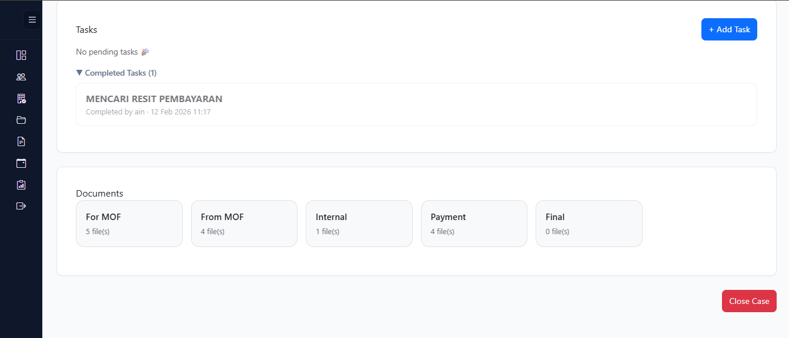
(OCMS) Integrated task tracking and categorized document management module supporting internal processing, payment records, and final submission control.

A reporting module that consolidates daily operational data, providing visibility into
service activity, case processing volume, and performance metrics.